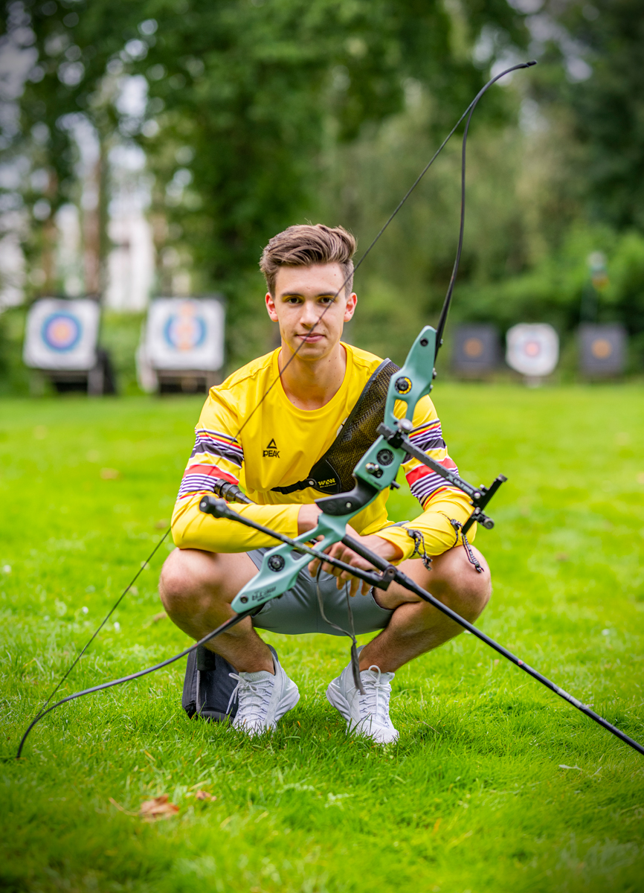

Belgisch Olympisch Handboogschutter & AI Student
Ik ben Jarno De Smedt, Belgisch Olympisch handboogschutter en afgestudeerd in Toegepaste Informatica aan de AP Hogeschool Antwerpen. Momenteel vervolg ik mijn studies in Artificiële Intelligentie. Via deze pagina kan je mijn professionele en sportieve activiteiten volgen.
 Tinrate
Tinrate